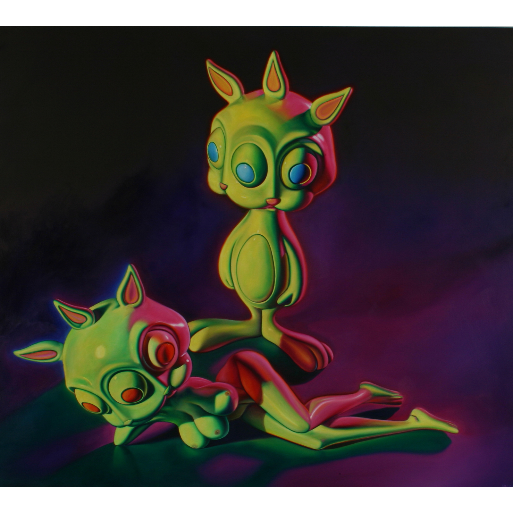

Exhibitions
Big Picture Pop, Opera Gallery, New York, New York, US, November 29–late December, 2007.
Literature
Ron English, Abject Expressionism: The Art of Ron English (San Francisco: Last Gasp, 2002), p. 45. ISBN 978-0867196894.
Notes
Also known as Rabbbit and Bunnny